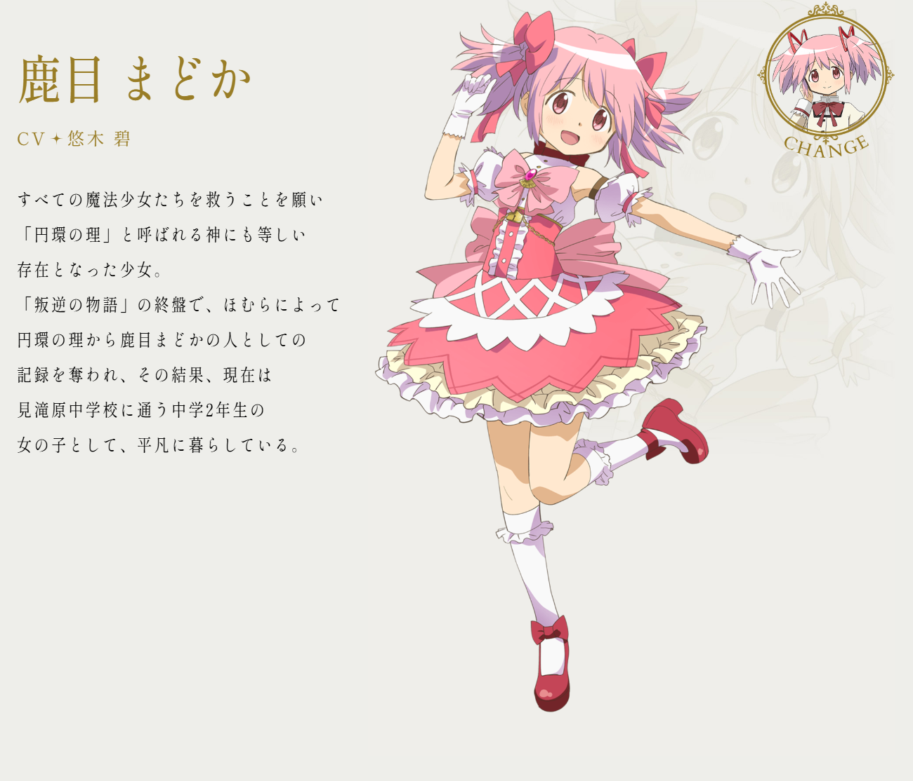
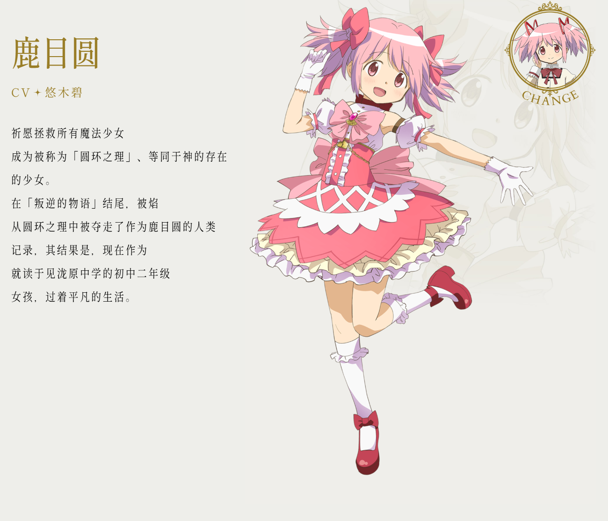
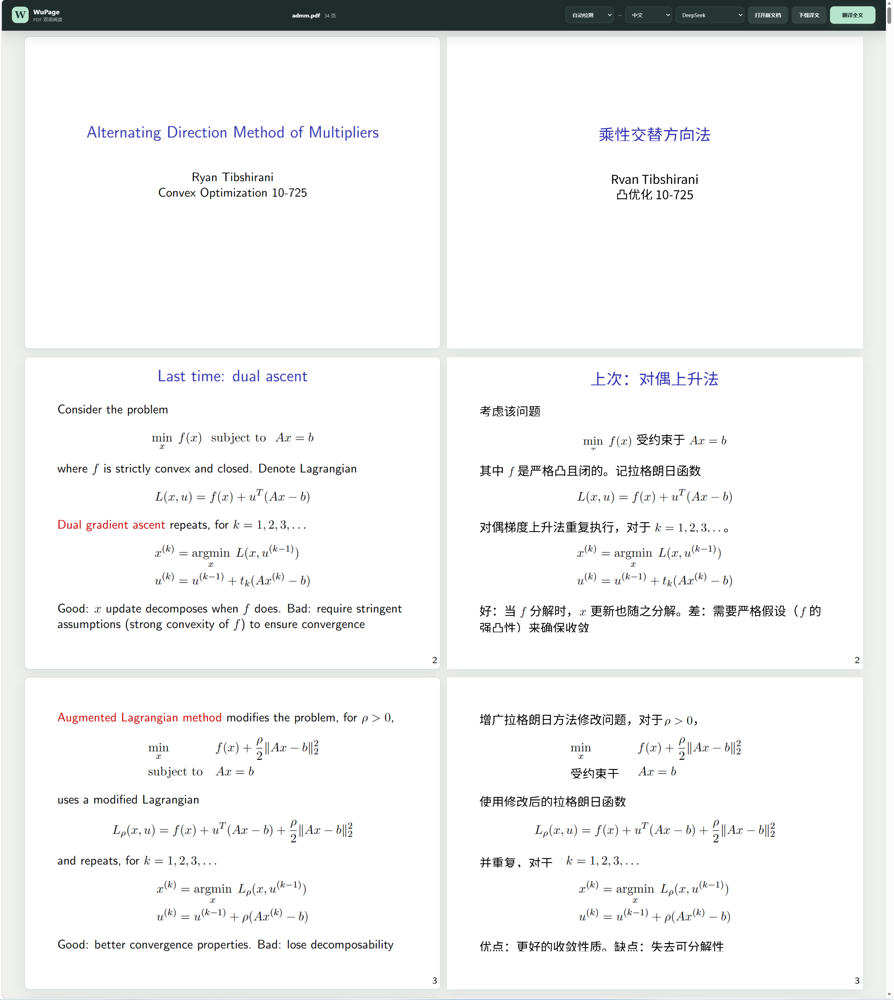

一键翻译，接着读
在当前网页查看译文，滚动加载的新内容也能继续翻译。只想读一段？开启段落模式，按住 Ctrl 点击即可。
从网页到 PDF，让外文阅读更轻松
读文章、看图片、校对文档，在熟悉的浏览器里完成。 安装后即可翻译，也能选择你喜欢的 AI 或本地离线服务。
扩展免费 · 无订阅费 · 支持一下 查看价格与免费范围 →
每一项功能都围绕「快速、清晰、可控」的翻译体验打磨。
在当前网页查看译文，滚动加载的新内容也能继续翻译。只想读一段？开启段落模式，按住 Ctrl 点击即可。
只看译文，或保留原文逐段对照。原色与双色对照都可选择，切换时无需重新翻译。
安装文字识别模型后，悬停图片点击「译」，或从右键菜单翻译图片。原图与译图随时切换。
原文、译文双栏对照，边读边翻译附近页面。直接修改译文、调整位置，校对后导出 PDF。
点击翻译或恢复原文，悬停展开语言与服务菜单。拖到习惯的位置，阅读时少一点打断。
默认服务无需密钥；也可使用 DeepSeek、GLM 等服务，或下载本地语言模型，离线阅读。
看看网页原文、翻译后的页面，以及 PDF 双栏阅读的真实效果。

翻译前的日文页面。

译文替换模式：在原页面阅读简体中文。也可选择原色对照或双色对照。

左侧原文，右侧译文。直接编辑译文块，校对后下载译文 PDF；纯扫描件暂不支持。
WuPage 不收取扩展使用费。在线 API 的费用由服务商收取；支持项目不会解锁额外功能。
US$5 / US$15 美元 · 两档可选 · 单次打赏
如果你觉得这个插件对你有帮助的话，可以支持一下我~
插件当前功能均免费，打赏不包括任何额外服务、功能、额度或其他权益。
查看退款规则选择 US$5 或 US$15，每次单独确认；适用税费及最终总额会在 Waffo 收银台付款前展示，可能产生的银行或汇兑费用以支付机构为准。
免费 无扩展使用费 · 无订阅费
当前提供的扩展功能均可免费使用，无需注册 WuPage 账户或付款。
免费下载扩展免费范围指 WuPage 的功能使用权；在线服务额度、网络流量及第三方费用另计。PDF 暂不支持纯扫描件。
收费或退款问题请联系 master.wuliu@gmail.com。了解服务条款与隐私政策。
推荐 Edge 商店安装。Chrome 可下载发布包手动安装。
打开商店，点击「获取」。安装后将 WuPage 固定到工具栏，并刷新要翻译的网页。
从 Edge 商店安装 ↗下载最新发布中的 Edge ZIP 包并解压，在扩展管理页开启「开发者模式」，加载解压后的目录。
下载最新版本 ↗需要 Firefox 154 或更新版本，以及独立的 Firefox 测试包。临时加载后，重启浏览器需再次加载。
查看测试版安装说明 ↗从第一次网页翻译开始，一步步找到适合你的阅读方式。
WuPage 当前所有扩展功能均免费使用，没有订阅费。预置免密钥服务可直接开始，但可能受服务商限流或可用性影响；自行配置 API 时，费用由对应服务商收取。是否支持由您决定，不影响免费使用。查看价格、免费范围与支持说明 →
可以。在设置中选择「Firefox 本地翻译（实验）」，下载所需语言模型。模型就绪后，Chrome、Edge 也能离线使用，不需要安装 Firefox。此功能会占用本机存储和计算资源。
图片翻译需要先安装文字识别模型，支持中、英、日文字；复杂背景可能影响效果。PDF 需要包含可提取的文字，暂不支持纯扫描件。导出的译文 PDF 保留版面，但文字无法选择或搜索。
在线翻译时，待翻译文字直接交给你选择的服务商处理。选择本地翻译时，文字在本机处理。设置、密钥和可选翻译缓存保存在浏览器本地。